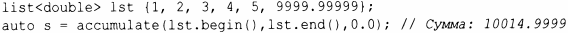

⇐14.2 Математические функции 14.3.1 Параллельные алгоритмы⇒
В заголовочном файле <numeric> находится небольшое множество обобщенных числовых алгоритмов, таких как accumulate().
| Числовые алгоритмы | |
|---|---|
| x=accumulate(b,e,i) | х - сумма i и элементов последовательности [Ь:е] |
| x=accumulate(b,e,i,f) | accumulate с использованием f вместо+ |
| x=inner_product(b,e, b2,i) | х - скалярное произведение [Ь:е] и [Ь2:Ь2 + (е-Ь)], т.е. сумма i и ( *pl) * ( *р2) для каждого pl из [Ь:е] и соответствующего р2 из [Ь2:Ь2+ (е-Ь)] |
| x=inner_product(b,e, Ь2, i, f, f2) | inner_product с использованием f и f2 вместо+ и * |
| p=partial_sum(b,e,out) | i-й элемент в [out:p] является суммой элементов [b:b+i] |
| p=partial_sum(b,e,out,f) | partial_sum с использованием f вместо+ |
| p=adjacent_difference (b,e,out) | i-й элемент в [out:p] равен * (Ь+ i) - * (Ь+ i-1) для i>O; если е-Ь>О, то *out равно *Ь |
| p=adjacent_difference (b,e,out,f) | adjacent_difference с использованием f вместо - |
| iota(b,e,v) | Каждому элементу в [Ь:е) присваивается значение ++v; таким образом, последовательность становится равной v+l, v+2, ... |
| x=gcd(n,m) | х - наибольший общий делитель целых чисел n и m |
| x=lcm(n,m) | х - наименьшее общее кратное целых чисел n и m |
Эти алгоритмы обобщают распространенные операции, такие как вычисление суммы, позволяя применять их ко всем видам последовательностей. Они также делают операцию, применяемую к элементам этих последовательностей, параметром. Для каждого алгоритма общая версия дополняется версией, применяющей наиболее распространенный оператор для этого алгоритма. Например:
Описанные алгоритмы работают для любой последовательности стандартной библиотеки и могут иметь операции, предоставляемые в качестве аргументов(§ 14.3).